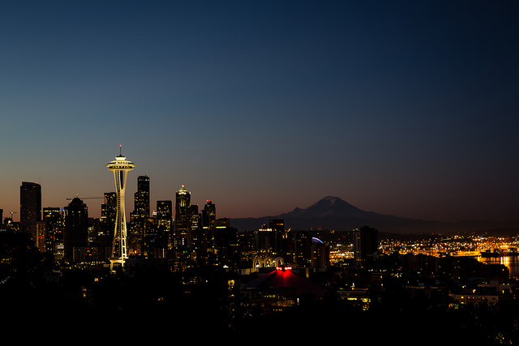

A short history of Seattle
Seattle lies on a narrow strip of land between the salt waters of Puget Sound and the fresh waters of Lake Washington. Beyond the waters lie two rugged mountain ranges, the Olympics to the west and the Cascades to the east. It is a city built on hills and around water, in a mild marine climate that encourages prolific vegetation and abundant natural resources.
White settlers came to the Seattle area in 1851, establishing a townsite they first called New York, and then, adding a word from the Chinook jargon meaning "by-and-by," New York-Alki. They soon moved a short distance across Elliott Bay to what is now the historic Pioneer Square district, where a protected deep-water harbor was available. This village was soon named Seattle, honoring a Duwamish Indian leader named Sealth who had befriended the settlers.
The new town's principal economic support was Henry Yesler's lumber mill at the foot of Mill Street (now Yesler Way), built in 1853. Much of the mill's production went to the booming city of San Francisco, but the mill also supplied the fledgling towns throughout the Puget Sound region. A brief Indian "war" in the winter of 1856 interrupted the town's development, but when the Territorial legislature incorporated Seattle in 1869, there were more than 2,000 residents.